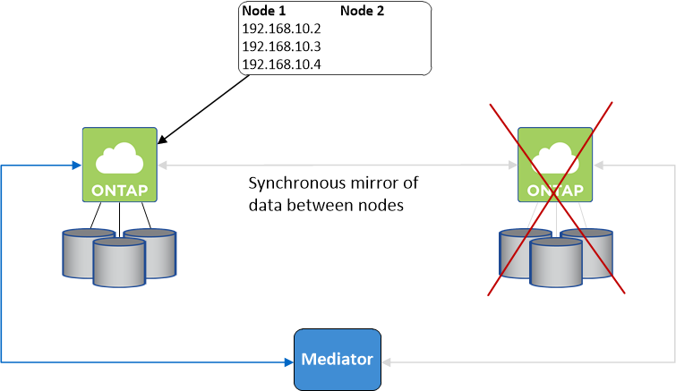

Amazon Web Services에서 직접 지원합니다
Amazon Web Services에서 직접 지원합니다
 Google 클라우드
Google 클라우드
 Microsoft Azure를 참조하십시오
Microsoft Azure를 참조하십시오
 문서 변경 요청
문서 변경 요청 이 페이지 편집
이 페이지 편집 기여하는 방법 자세히 알아보기
기여하는 방법 자세히 알아보기AWS의 고가용성 쌍
Cloud Volumes ONTAP HA(고가용성) 구성은 무중단 운영 및 내결함성을 제공합니다. AWS에서는 데이터가 두 노드 간에 동기식으로 미러링됩니다.
HA 구성 요소
AWS에서 Cloud Volumes ONTAP HA 구성에는 다음과 같은 구성요소가 포함됩니다.
-
데이터가 서로 동기식으로 미러링되는 2개의 Cloud Volumes ONTAP 노드
-
스토리지 테이크오버 및 반환 프로세스를 지원하는 노드 간 통신 채널을 제공하는 중재자 인스턴스
중재자
다음은 AWS의 중재자 인스턴스에 대한 몇 가지 주요 정보입니다.
- 인스턴스 유형
-
T2-마이크로
- 디스크
-
약 8GiB의 EBS 마그네틱 디스크 1개
- 운영 체제
-
데비안 11

Cloud Volumes ONTAP 9.10.0 이전 버전에서는 데비안 10이 중재자위에 설치되었습니다. - 업그레이드
-
Cloud Volumes ONTAP를 업그레이드하면 Cloud Manager가 필요에 따라 중재자 인스턴스도 업데이트합니다.
- 인스턴스에 대한 액세스
-
Cloud Manager에서 Cloud Volumes ONTAP HA 쌍을 생성하는 경우 중재자 인스턴스에 대한 키 쌍을 제공하라는 메시지가 표시됩니다. "admin" 사용자를 사용하여 SSH 액세스에 해당 키 쌍을 사용할 수 있습니다.
- 제3자 에이전트
-
타사 에이전트 또는 VM 확장은 중재자 인스턴스에서 지원되지 않습니다.
스토리지 테이크오버 및 반환
노드가 중단되면 다른 노드가 파트너에게 데이터를 제공하여 지속적인 데이터 서비스를 제공할 수 있습니다. 데이터는 파트너에게 동기식으로 미러링되므로 클라이언트가 파트너 노드에서 동일한 데이터에 액세스할 수 있습니다.
노드가 재부팅된 후 파트너가 스토리지를 반환하기 전에 데이터를 다시 동기화해야 합니다. 데이터를 재동기화하는 데 걸리는 시간은 노드가 다운된 동안 변경된 데이터의 양에 따라 달라집니다.
스토리지 테이크오버, 재동기화 및 반환은 기본적으로 모두 자동으로 수행됩니다. 사용자 작업이 필요하지 않습니다.
RPO 및 RTO
HA 구성을 사용하면 다음과 같이 데이터의 고가용성을 유지할 수 있습니다.
-
복구 지점 목표(RPO)는 0초입니다. 데이터는 데이터 손실 없이 트랜잭션 측면에서 일관적입니다.
-
복구 시간 목표(RTO)는 60초입니다. 정전이 발생할 경우 60초 이내에 데이터를 사용할 수 있어야 합니다.
HA 구축 모델
여러 AZs(Availability Zone) 또는 단일 AZ에 HA 구성을 배포하여 데이터의 고가용성을 보장할 수 있습니다. 각 구성에 대한 자세한 내용을 검토하여 요구 사항에 가장 적합한 구성을 선택해야 합니다.
여러 가용성 영역
AZ(Multiple Availability Zones)에 HA 구성을 구축하면 AZ 또는 Cloud Volumes ONTAP 노드를 실행하는 인스턴스에서 장애가 발생할 경우 데이터의 고가용성을 보장할 수 있습니다. NAS IP 주소가 데이터 액세스 및 스토리지 페일오버에 미치는 영향을 이해해야 합니다.
NFS 및 CIFS 데이터 액세스
HA 구성이 여러 가용성 영역 간에 분산되면 _floating IP addresses_enable NAS 클라이언트 액세스를 사용합니다. 해당 지역의 모든 VPC에 대한 CIDR 블록 외부에 있어야 하는 부동 IP 주소는 장애가 발생할 경우 노드 간에 마이그레이션할 수 있습니다. 고객이 아닌 한 VPC 외부에 있는 클라이언트에서 기본적으로 액세스할 수 없습니다 "AWS 전송 게이트웨이를 설정합니다".
전송 게이트웨이를 설정할 수 없는 경우 VPC 외부에 있는 NAS 클라이언트에서 전용 IP 주소를 사용할 수 있습니다. 그러나 이러한 IP 주소는 정적이며 노드 간에 페일오버할 수 없습니다.
여러 가용성 영역에 HA 구성을 배포하기 전에 부동 IP 주소 및 라우팅 테이블에 대한 요구 사항을 검토해야 합니다. 구성을 배포할 때 부동 IP 주소를 지정해야 합니다. 프라이빗 IP 주소는 Cloud Manager에서 자동으로 생성합니다.
자세한 내용은 을 참조하십시오 "여러 AZs에서 Cloud Volumes ONTAP HA를 위한 AWS 네트워킹 요구사항".
iSCSI 데이터 액세스
iSCSI는 부동 IP 주소를 사용하지 않으므로 Cross-VPC 데이터 통신은 문제가 되지 않습니다.
iSCSI의 테이크오버 및 반환
iSCSI의 경우 Cloud Volumes ONTAP는 다중 경로 I/O(MPIO) 및 ALUA(Asymmetric Logical Unit Access)를 사용하여 능동 최적화 경로와 최적화되지 않은 경로 간의 경로 페일오버를 관리합니다.
|
|
ALUA를 지원하는 특정 호스트 구성에 대한 자세한 내용은 를 참조하십시오 "NetApp 상호 운용성 매트릭스 툴" 및 호스트 운영 체제용 Host Utilities 설치 및 설정 설명서를 참조하십시오. |
NAS의 테이크오버 및 반환
유동 IP를 사용하는 NAS 구성에서 테이크오버가 발생하면 클라이언트가 데이터에 액세스하는 데 사용하는 노드의 부동 IP 주소가 다른 노드로 이동합니다. 다음 이미지는 유동 IP를 사용하는 NAS 구성의 스토리지 테이크오버를 보여 줍니다. 노드 2가 다운되면 노드 2의 부동 IP 주소가 노드 1로 이동합니다.

외부 VPC 액세스에 사용되는 NAS 데이터 IP는 장애가 발생할 경우 노드 간에 마이그레이션할 수 없습니다. 노드가 오프라인이 되면 다른 노드의 IP 주소를 사용하여 VPC 외부의 클라이언트에 볼륨을 수동으로 다시 마운트해야 합니다.
장애가 발생한 노드가 다시 온라인 상태가 되면 원래 IP 주소를 사용하여 클라이언트를 볼륨에 다시 마운트합니다. 이 단계는 두 HA 노드 간에 불필요한 데이터를 전송하지 않아야 하므로 성능에 중대한 영향을 미칠 수 있습니다.
볼륨을 선택하고 * 탑재 명령 * 을 클릭하여 Cloud Manager에서 올바른 IP 주소를 쉽게 식별할 수 있습니다.
단일 가용성 영역
AZ(단일 가용성 영역)에 HA 구성을 구축하면 Cloud Volumes ONTAP 노드를 실행하는 인스턴스에 장애가 발생할 경우 데이터의 고가용성을 보장할 수 있습니다. 모든 데이터는 VPC 외부에서 기본적으로 액세스할 수 있습니다.
|
|
Cloud Manager에서 을 생성합니다 "AWS 배치 그룹 분산" 그런 다음 해당 배치 그룹에서 2개의 HA 노드를 시작합니다. 배치 그룹은 서로 다른 기본 하드웨어에 인스턴스를 분산하여 동시 오류 위험을 줄입니다. 이 기능은 디스크 장애 관점이 아니라 컴퓨팅 측면에서 중복성을 향상시킵니다. |
데이터 액세스
이 구성은 단일 AZ에 있으므로 부동 IP 주소가 필요하지 않습니다. VPC 내부 및 VPC 외부에서 동일한 IP 주소를 사용하여 데이터에 액세스할 수 있습니다.
다음 이미지는 단일 AZ의 HA 구성을 보여줍니다. VPC 내부 및 VPC 외부에서 데이터에 액세스할 수 있습니다.

테이크오버 및 반환
iSCSI의 경우 Cloud Volumes ONTAP는 다중 경로 I/O(MPIO) 및 ALUA(Asymmetric Logical Unit Access)를 사용하여 능동 최적화 경로와 최적화되지 않은 경로 간의 경로 페일오버를 관리합니다.
|
|
ALUA를 지원하는 특정 호스트 구성에 대한 자세한 내용은 를 참조하십시오 "NetApp 상호 운용성 매트릭스 툴" 및 호스트 운영 체제용 Host Utilities 설치 및 설정 설명서를 참조하십시오. |
NAS 구성의 경우 장애가 발생할 경우 데이터 IP 주소를 HA 노드 간에 마이그레이션할 수 있습니다. 이렇게 하면 클라이언트가 스토리지에 액세스할 수 있습니다.
HA Pair의 스토리지 작동 방식
ONTAP 클러스터와 달리 Cloud Volumes ONTAP HA 쌍의 스토리지는 노드 간에 공유되지 않습니다. 대신 데이터가 노드 간에 동기식으로 미러링되므로 장애 발생 시 데이터를 사용할 수 있습니다.
스토리지 할당
새 볼륨을 생성하고 추가 디스크가 필요하면 Cloud Manager에서 두 노드에 동일한 수의 디스크를 할당하고 미러링된 애그리게이트를 생성한 다음 새 볼륨을 생성합니다. 예를 들어, 볼륨에 2개의 디스크가 필요한 경우 Cloud Manager는 노드당 총 4개의 디스크에 2개의 디스크를 할당합니다.
구성의 스토리지
HA 쌍을 액티브-액티브 구성으로 사용할 수 있으며, 두 노드에서 클라이언트에 데이터를 제공하거나 액티브-패시브 구성으로 사용할 수 있습니다. 이 구성에서는 패시브 노드가 액티브 노드의 스토리지를 인계받은 경우에만 데이터 요청에 응답합니다.
|
|
스토리지 시스템 보기에서 Cloud Manager를 사용하는 경우에만 액티브-액티브 구성을 설정할 수 있습니다. |
성능 기대치
Cloud Volumes ONTAP HA 구성은 노드 간에 데이터를 동기식으로 복제하여 네트워크 대역폭을 사용합니다. 따라서 단일 노드 Cloud Volumes ONTAP 구성과 비교하여 다음과 같은 성능을 기대할 수 있습니다.
-
한 노드의 데이터만 제공하는 HA 구성의 경우 읽기 성능은 단일 노드 구성의 읽기 성능과 비슷하며 쓰기 성능은 낮습니다.
-
두 노드의 데이터를 제공하는 HA 구성의 경우 읽기 성능은 단일 노드 구성의 읽기 성능보다 높고 쓰기 성능은 동일하거나 더 높습니다.
Cloud Volumes ONTAP 성능에 대한 자세한 내용은 를 참조하십시오 "성능".
스토리지에 대한 클라이언트 액세스
클라이언트는 볼륨이 상주하는 노드의 데이터 IP 주소를 사용하여 NFS 및 CIFS 볼륨을 액세스해야 합니다. NAS 클라이언트가 파트너 노드의 IP 주소를 사용하여 볼륨에 액세스하는 경우 트래픽이 두 노드 간에 이동하므로 성능이 저하됩니다.

|
HA 쌍에서 노드 간에 볼륨을 이동하는 경우 다른 노드의 IP 주소를 사용하여 볼륨을 다시 마운트해야 합니다. 그렇지 않으면 성능이 저하될 수 있습니다. 클라이언트가 CIFS에 대한 NFSv4 참조 또는 폴더 리디렉션을 지원하는 경우 Cloud Volumes ONTAP 시스템에서 이러한 기능을 설정하여 볼륨을 다시 마운트하지 않도록 할 수 있습니다. 자세한 내용은 ONTAP 설명서를 참조하십시오. |
Cloud Manager에서 올바른 IP 주소를 쉽게 식별할 수 있습니다.